Menubar
Updated 12 May 2010
- QuArK Information Base
- 1. Introduction to QuArK
- 1.5. Map-editor in QuArK
|
|
Menubar
Updated 12 May 2010
|
Upper levels: - QuArK Information Base - 1. Introduction to QuArK - 1.5. Map-editor in QuArK |
|
1.5.2. Menubar |
[ - - ] |
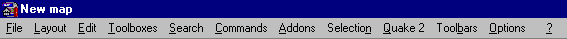 New commands are constantly being added to the main menus; if there is no F1 help for some command not listed here, or you can't understand what it says, post to the QuArK messageboard for help (and a heads-up to the docco writers). Most of the commands on the menus also have hot keys (accelerators), which you can customize from Configuration at the bottom of the 'Options menu'. |
|
Index |
|
|
|
File menu |
Decker - 28 Feb 2001 | [ Top ] |
|
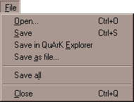 Open works just as in the QuArK-Explorer. You can open any file with this, to apply it to your project. Save will save your current project to an .QRK file. Save in QuArK Explorer . Use this if you want to add this map to your current project. This way, you can have multiple revisions of a single map, in a single project. Just remember to give them a sensible name, so you can distinguish them. At the moment (QuArK v5.7), the map editor will automatically close itself when you use this menuitem. Save as file . If you want to export just this map to a .MAP or .QKM file, select this menuitem. Save all will save all opened files. This includes the current project and modified add-on data files. Close will close the map editor. |
|
Layout menu |
Decker - 28 Feb 2001 | [ Top ] |
|
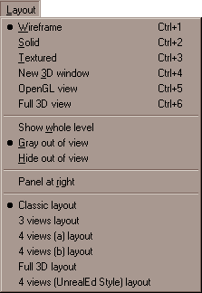 Wireframe will change all map-views to show polyhedrons and entities as wireframe-graphics. This is the fastest drawing-method of the map-views. Solid will change all map-views to show polyhedrons as solid object. This means that you won't be able to 'see-through' polyhedrons once they are in view. Textured will change all map-views to show polyhedrons with their applied textures and alignment. It will also show 3D-models of entities, if QuArK can find the 3D-representation. New 3D-window will create a new free-floating 3D edit window. An 'eye' with an angle-handle will be shown in the map-views, to illustrate from where the camera sees the world. You can actually edit polyhedrons in the 3D-window, and manipulate textures. OpenGL view , does the same as the previous command "New 3D-window" but the 3D viewer uses the OpenGL standard 3D graphic library. In QuArK v5.10 (and higher) it is also the only way to preview (colored-) light effects. (Silicon Graphics' OpenGL drivers for Windows: http://www.berkelium.com/OpenGL/sgi-opengl.html.) Show whole level will in wireframe-mode, draw all lines the level consists of, even those that can't be seen simultaneously in all map-views. Gray out of view will in wireframe-mode, draw grey lines of those parts of the level, which can't be seen within the map-views. Hide out of view will in wireframe-mode, only draw lines for those parts of the level, which is within the map-views. Panel at right . Check this menu-item, if you want the compass, dataform and that area, moved to the right of the map-views. Layouts . These menu-item are used to change between the different map-layouts. |
|
Edit menu |
Decker - 20 Mar 2003 | [ Top ] |
|
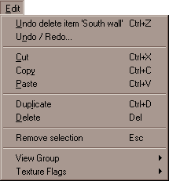 Undo [something] . This menuitem will be active, if you can undo a previous action. The something , will be the action it will undo. Undo/Redo will open up the Undo/Redo window, where you can undo or redo more actions with one mouse-click. Cut . You know; remove the selection and put it into the clipboard. Copy . Just as easy; copy the selection into the clipboard. Paste . Take whatever is in the clipboard, and if it is something QuArK can use, it will paste it to where you point. Duplicate . A copy and paste action, but without putting the selection in the clipboard. Delete . Deletes the selection. Notice that it won't put anything in the clipboard. View group . See the View Group menu. It will only be active, if you have selected a group in the tree view. Texture flags . Only some games have this menuitem. See Face-flags window for a description. 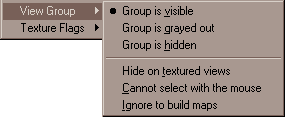 If you have a group selected in the tree view, you can specify different behaviour for it. Group is visible . This is the normal setting. All objects that belongs to this group, are visible and selectable on the map-views. Group is grayed out . When this is marked, all objects that belongs to this group, are shaded even if they are within the visible part of the map-views. Group is hidden . Every object that belongs to this group, are not drawn on the map-views. Marking this option will automatically also check the Cannot select with the mouse option. Hide on textured views . When this option are checked, all objects belonging to this group are not shown on solid-, textured- or 3D-views, only wireframe-views. This speeds up drawing a bit. Cannot select with the mouse . Check this option, if you do not want to select and change objects belonging to this group by an accident. This is a good setting, when you are done with some part of your map, and starts to build something else near or within that finished part. Ignore to build maps . If this option is checked and the Ignore groups marked so when building map in the option menu also is checked, QuArK will not include objects belonging to this group, when you build your level. Using this option, you can play-test parts of your level, without having to compile the entire level every time. |
|
Toolboxes menu |
Decker - 28 Feb 2001 | [ Top ] |
|
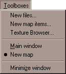 This menu works just like the one in QuArK Explorer. |
|
Search menu |
Decker - 12 Sep 2008 | [ Top ] |
|
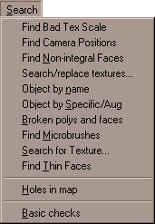 Find Bad Tex Scale . This finds faces whose texture axes are almost parallel. Find Camera Positions . This finds all the camera positions. Find Non-integral Faces . This finds faces that don't have integral threepoints. Use integralize Selected Faces on the command menu to try to automatically fix them. If you want a particular group to be allowed to contain faces with non-integral threepoints, give it a nonintegral specific with a value such as 1. Search/replace textures . Use this if you need to replace one texture in a selection, with another texture. Object by name will search for the next entity with a classname that matches the name you entered. Object by Specific/Aug will search for the next entity with an specific-name which matches the search-value you entered. Broken polys and faces . Activating this option, will search your map for invalid polyhedrons and faces which does not belong to a polyhedron. Find Microbrushes . This function identifies brushes that are suspiciously small, at least in one dimension. Search for Texture . This function will search for the texture you specify. Find Thin Faces . This function will search for and identifies brushes with faces that are suspiciously thin. Holes in map . This function will try to check your map for leaks also known as Holes. A map must not contain any hole, that is, there must be no path from 'inside' to 'outside' the map. All entities must be completely enclosed by polyhedrons. With this command, QuArK will search for such holes, and if it finds one, it displays an arrow that starts from an entity and goes outside through a hole or a gap. Generally, the end of the arrow is exactly in the hole. Note that the path found by QuArK is maybe not the most direct way to reach the hole, and there are maybe other holes in your map. It is not a accurate leak/hole finder, so sometimes it might point to a leak which isn't there. Basic checks . Performs various checks on your map, to see if it can be compiled correctly, and function properly in the FPS-game. |
|
Commands menu |
Decker, tiglari - 18 Dec 2007 | [ Top ] |
|
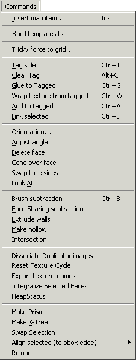 Insert map item. Activating this, will open the New map items window. Build templates list. Creates a list of Templates for the current game mode that can be used if any exist. Tricky force to grid. Repairs maps that are off-the-grid. Tag side. This menuitem are created by a plug-in. It allows you to select, or tag as it says, a face of an polyhedron. With a tagged-face, the next three menuitems becomes active. See 'Basic Tag and Glue' for detail on how to use this function. Clear tag. Removes the tag. Glue to tagged. Another selected face or polyhedron, can be glued to the tagged face. Very usefull if you want another face to touch the tagged-face, so it will be somewhat seamless. Wrap texture from tagged. Should be enabled when the selected face is next to the tagged one, and should wrap the texture from the tagged onto the selection, with a fluent seam. Add to tagged. Should be enabled when there is a tagged face, and other face is selected; adds the selected face to the collection of tagged ones. Link selected. To use this one, you first need to create a multiple selection of faces all occupying the same plane. This can be done with the 'Extend Selection from Face' from the 'Selection menu' below, or, if you have made a list of tagged faces, with the 'Select Tagged' item from the same menu. What the Link selection command then does is 'link' all of the selected faces so that if one is moved, you will be invited to move all the others with it. Orientation. Only active when you have selected a face. It will bring up a window where you can edit some attributes about that face. However, its not recommended that you do it this way, unless you know what you're doing! Adjust angle. Only active when you have selected a face. This will bring the angle of the face on the polyhedron, to the nearest angle by which you specified in the 'Building'. Delete face. As it says. However, deleting a face will very likely make a polyhedron invalid. Cone over face. This will create a new set of faces in style as a cone, over the selected face. The number of new faces will be the number of edges the selected face has. Swap face sides. Will swap the face inside-out. Do not use this, unless you really want to! Look At. An open 3D view shifts to look at this face head on. (SHIFT to look at the face from the back)
Brush subtraction. This function will subtract one brush from another; Face sharing subtraction. This is an advanced brush subtraction method. If a face from the originally brush, will be split up into multiple faces by the subtraction, it will actually be converted into a face, which is shared by the brushes that will be created by the brush-subtraction. Read more about 'Face Sharing'. Extrude walls. This extrudes walls from the faces, deletes the poly(s). Make hollow. This will create a polyhedron for each face the selection has, and delete the original selected polyhedrons. The inflate/deflate value in the Movement configuration window, determines the thickness of the new polyhedrons, and if they should occupy (negative value) or surround (positive value) the original selected polyhedrons. Intersection. This is basically a kind of brush adding function. It will try to create a new polyhedron which occupy the common area of the selected polyhedrons. Dissociate Duplicator images. Only active when you have marked a duplicator. This will create actual copies of the duplicator-object(s), and remove the duplicator itself. Reset Texture Cycle. Reload files specifying texture cycles for duplicators. Export texture-names. Exports a list of used textures in this map, to a text-file. Integralize Selected Faces. If faces without integral threepoints have enough integral vertices to be used as threepoints, changes the face to use them (also forces nearly integral ones). Selects the ones it changes, for checking. Use Find Non-integral Faces on the search menu to find suitable victims. Research and fix the remaining ones by hand. HeapStatus. This item only shows on the menu if Developer Mode is activated on the 'Options' menu, shown below in that section. This function is used to display heap information which tracks changes in memory used by this program. Make Prism. This opens a dialog window for your input to create a prism of various types as well as texture selection. Make X-Tree. This is a simple 'tree' maker that allows you to select you texture, number of 'wings' and the scale size. Swap Selection. Swap first and second elements of 2 selected items. Align selected. Align items in selection along their bounding box edges, or along the edges of a marked object (RMB I Navigate Tree I Reload. This item only shows on the menu if Developer Mode is activated on the 'Options' menu, shown below in that section. When working on developing a plugin you can use this function to reload that plugin, or any other, without having to shut down and restart QuArK. However, in some cases this function is not always effective. |
|
Addons menu |
cdunde - 12 May 2010 | [ Top ] |
|
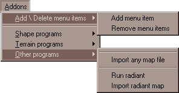 Addons: This Main menu category was added for 3rd party, outside programs that can be ran from within QuArK. Each item through out this menu has its own help dialog. Just high light the menu item and press F1 for further help and a link to the infobase for further details if an 'InfoBase' link button exist in the help window. Add \ Delete menu items: These functions allow you to add and delete 3rd party programs to this menu, that save or export their output to a map file which can then be imported to the QuArK editor and used in the file you are editing. You can use any .map file that the program outputs to, at any location, or a default map file as your input file. The default import file should be created and saved to YourGame\tmpQuArK\maps folder and named '1SaveImport.map' . If this file is damaged or lost it can be recreated by simply making a basic map file in QuArK (with world_spawn ONLY) and saved with the default file name above. Add menu item: This will add a 3rd party program to the menu. Using the 'Add Item Dialog' window, select a category to place your menu items under and then find the program you want to add with the 'select program' file browser '...' button to the right of the input box. You can either leave the output/input default file at its current setting and point the programs output to it or use the 'File Browser' button ... to select another map file and location to use. Once the program items are added, you will be given a notice as such and to restart QuArK to complete the process of adding the items to your menu. You can add as many items to your menu as you like before restarting QuArK. Each program added will have two items (with the programs name) and a separation line to isolate them for easy recognition, as well as F1 popup windows to remind you where the program and import files are located on your hard drive. The first item starts the program. Once you have exported its finished product to the default map file, then use the second item to import the map file into the QuArK editor. The entire product will be added to the map you are currently working on as a separate group item. Although the 'worldspawn' entity will NOT be imported, other entities can be and may require you to delete them, like another 'info_player_start' for example. Because these ARE 3rd party programs, QuArK does not provide any documentation on their use and makes no warranty for them. Remove menu items: Use this function to remove the desired custom menu items that have been added. Shape programs: These are programs that can make different shapes to use in your maps. One that I recommend is 'MGS-object builder' and can be downloaded from the Yahoo QuArK group site. If you find any programs that may help others, please let us know by making a posting to the QuArK groups site. Terrain programs: This category is for your terrain programs for making landscape layouts in your maps. One that I recommend is 'Terrain Generator' and can be downloaded from its own site. Other programs: This category is for all other types of programs that can export to a map file for your use in QuArK. Import any map file: This item function allows you to load any map file into the existing editor to be added to the map you are working on. Because it also may import entities, you may half to delete some of them like its info_player_start. This function is created by the plugins/map1loadanymap.py file. |
|
Selection menu |
tiglari - 05 Jan 2004 | [ Top ] |
|
Game menu |
Decker - 06 Aug 2008 | [ Top ] |
|
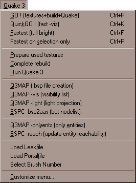 Menu Overview The commands in this menu lets you run your map with the game. The most common commands are the first few ones, which lets you try your map as a one-step operation. Before a map can be played, it must be compiled (translated into a .bsp file). This is done by other programs that QuArK will call for you. See the Configuration dialog box, under the page of the game you wish to map for, where you must tell QuArK where these build programs are installed. The programs themselves are available in Tool Packs, one for each game you want to make maps for, and that can be downloaded from QuArK's download tools-page. GO! does the whole sheebang. QuickGO! a faster version, which should only be used when testing your map. Fastest (full bright) , this is the fastest build for testing your map, but it will not show any lighting effects. Fastest on selection only , same as 'Fastest' but only builds what you have selected. Prepare used textures creates a .WAD texture-file, with the textures used in the map. Complete rebuild will build everything, except running the FPS-game. Run FPS-game starts the game with the current map. The next menuitems varies from FPS-game to FPS-game. Familiarize yourself with these build tools, for the FPS-game you're building a map to. Load Leak file If you have a 'Leak' (hole) in your map you will see a red line running through the effected area and QuArK will generate a 'Point' file which creates this line. This feature allows you to reload that file to see the line again, as long as the map is not recompiled after the hole is fixed. If it is fixed and recommpiled, QuArK will eleminate the error which turns this function off. Load Portal file This feature will show the 'Portals' of your map outlined with blue lines. What the blue lines indicate is the 'windows' between the convex ('leaf nodes') that the bsp process carves the visible spaces of your map into. So you can investigate the effects of using detail and hint-brushes, etc to make your map more efficient and run better. However if there was a 'Hole' in your map the last time it was compiled, this menu item will be turned off until the map is recompiled after the 'Hole' is fixed (see 'Load Leak file' above). Select Brush Number Tries to find brushes by Entity and Brush number, as specified in the Python-console compile tool error messages (the use of duplicators, etc. might subvert this). Customize menu opens a window, in where you can add, change and remove the above menuitems and their functionality. |
|
Toolbars menu |
Decker - 27 Mar 2003 | [ Top ] |
|
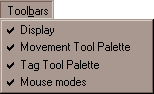 Display . Wether or not the Display toolbar should be visible. Movement Tool Palette . Whether or not the Movement toolbar should be visible. Tag Tool Palette . Whether or not the Tag toolbar should be visible. Mouse modes . Wether or not the Mouse Modes toolbar should be visible. |
|
Options menu |
Decker - 21 Dec 2007 | [ Top ] |
|
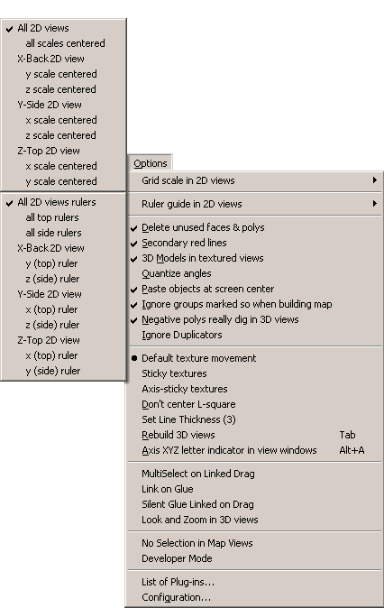 Grid scale in 2D views . These functions allow you to display a scale and tick mark guides of the current grid setting in any one, combination, or all of the 2D views of the Editor, as shown in the top sub-menu. You can also center any one or combination of the scales for each view. If ' All 2D views ' or ' all scales centered ' is checked, it will deactivate this menu's individual items. Ruler guide in 2D views . These functions allow you to display a line with the unit distance of total selected items in any one, combination, or all of the 2D views of the Editor. Much like the 'Grid scale in 2D views' function above, this feature also has its own list of selections, as shown in the bottom sub-menu. If one of these sub-menu items is active, checked, then when ever a single face, poly or group of polys are selected a 'Ruler' will be displayed above and/or beside them from the starting point to the end point of the selected items along with '0' at the starting point and the total amount of their distance at the end point. Delete unused faces & polys . If this is unchecked, you will be able to make invalid polyhedrons/faces. Always keep this marked, so QuArK will warn you, when you are going to make an invalid polyhedron/face. Secondary red lines . When this is marked, an extra set of red lines will appear in the map-views. These can be used to reduce the selection-area of one map-view, if you do the selection in the other. 3D Models in textured views . Check this to see a 3D representation of the entity-models, in textured views. Quantize angels . When this is checked, adjusting any angle, like a face-angle or entity-angle, it will automatically adjust it to the nearest angle, specified in 'Building'. Paste objects at screen center . Check this if you want objects that you paste into the map-view, appear in the center of the current map-view. Uncheck it, and it will paste it at the exact position as the original. Ignore groups marked so when building map . When this is marked, any group marked Ignore to build map will not be available in the map when running the FPS-game. Uncheck this if you want your entire map build. Negative polys really dig in 3D views . If this option is off, negative polyhedrons are shown as normal polyhedrons in textured view so that you can easily edit them. When this option is on, digging is performed and you don't see the negative polyhedron at all, but only the hole it made. Ignore Duplicators . Hides all duplicators and templates from being seen in the editors views. Default/Sticky/Axis-sticky texture . In QuArK, the textures are attached to polyhedrons in such a way that they follow all its movements. However, for easier texture alignment, you can set these options that only apply when scrolling polyhedrons (not rotating nor zooming). Sticky textures . The textures don't move when you look at it standing in front of the face. Axis-sticky textures . The textures don't move when you look at it from the nearest axis direction. To mimic the way QuArK and most other Quake editors work, choose AXIS-STICKY. Don't center L-square . If this item is on, threepoints aren't re-centered on face in texture positioning. Set Line Thickness . This lets you set the thickness of certain lines that are drawn on the map, such as leak lines, portals, and targetting arrows. Rebuild 3D views . This rebuilds the 3D views (actually all views) in case of a lockup. You may have to do this a few times to clear the views up. The easiest way is to just push the HotKey 'Tab' untill the views unlock and clear up. Axis XYZ letter indicator in view windows . This display s the X Y or Z indicator letter per view to associate the rotation menu buttons. These are for reference only and are not selectable with the mouse. MultiSelect on Linked Drag . When this option is checked, when a face is dragged that is linked to others, they all become the multi-selection after the drag. When it is unchecked, the selection remains unchanged. Link on Glue . When this option is checked, the `Glue-to-tagged' command links the glued side to the tagged one, making it easy to keep them copanar. Silent Glue Linked on Drag . When this option is checked, when something is dragged, faces linked to its faces will be dragged along too. Look and Zoom in 3D views . If this menu item is checked, it will zoom in and center on the selection(s) in all of the 3D views when the 'Zoom to selection' button on the 'Selection Toolbar' is clicked. If a face is selected and the 'Shift' key is held down, it will look at the other side of the face and strive to center it in the view. If this menu item is unchecked, it will only look in the selection(s) direction from the current camera position. No Selection in Map Views . When this menu item is checked, selection in the map views is prevented. This is useful when touring with the 3d viewer, to prevent selecting things accidentally. Developer Mode . In this mode, two extra items appear on the 'Commands' menu, to help with debugging, etc. They are HeapStatus and Reload. For more detail on them see the 'Commands' menu listing above. List of Plug-ins . Opens a window which shows what plug-ins QuArK has loaded. Configuration . Takes you to the 'Configuration of QuArK'. |
|
Help menu |
Decker - 28 Feb 2001 | [ Top ] |
|
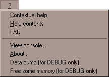 Contextual help . Opens your web-browser. Help contents . Opens your web-browser. View console . Shows a Python-console. Usefull when debugging plug-ins. About . Shows the about box. |
|
Copyright (c) 2009, GNU General Public License by The QuArK (Quake Army Knife) Community - http://quark.sourceforge.net/ |
[ - Top - ] |